CReSCENT: CanceR Single Cell ExpressioN Toolkit (https://crescent.cloud), is an intuitive and scalable web portal incorporating a containerized pipeline execution engine for standardized analysis of single-cell RNA sequencing (scRNA-seq) data. While scRNA-seq data for cancer specimens is easily generated, subsequent analysis requires high-performance computing infrastructure and user expertise to tailor interpretation for cancer. CReSCENT is populated with multiple public datasets and preconfigured pipelines that are accessible to computational biology non-experts, and user-editable to allow for optimization, comparison, and re-analysis on the fly.
CReSCENT is supported and funded by Genome Canada, Medicine by Design, Princess Margaret Cancer Centre, the University Health Network, and the Hospital for Sick Children.
Contact us
We'd like to hear from you! Please feel free to reach the CReSCENT team to report bugs, suggest features, provide feedback, etc. Email us at crescent@uhnresearch.ca or submit an issue to our Github.
Portal overview
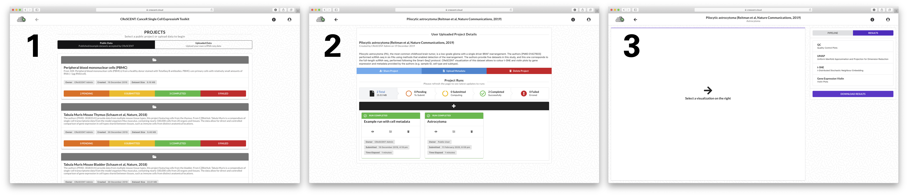The three main pages within CReSCENT: 1) Projects/home, 2) Project runs, 3) Visualizations.
The CReSCENT interface is represented by three main pages: Projects, Runs, and Visualizations. The Projects page (1) serves as the homepage, and here you can upload your own data or explore public cancer datasets curated by the CReSCENT team. Once a project is selected, the Runs page (2) shows all the runs/jobs that have been submitted. Run statuses are displayed by the run card colour (e.g. green for completed, yellow for in progress, etc.). The Runs page also houses functional buttons for sharing the current project with other CReSCENT users and uploading metadata to the project. Once a run is selected, the Visualizations page (3) displays the available visualizations, including quality control plots and explorable gene expression through t-SNE, UMAP, and violin plots. Actions within these three pages are detailed throughout this documentation.
Creating a project
CReSCENT is organized into projects, each of which features a single scRNA-seq dataset. Projects exist within the portal as public or uploaded (private). Public projects are curated by the CReSCENT team, and results within these projects can be explored by all users. In addition to exploring these public projects, your own scRNA-seq data can be uploaded to be processed. To create a new project, click on the 'Uploaded Data' tab in the Projects page, followed by the '+' icon. A 'New Uploaded Project' window will appear where you can enter a name and description for the project. Associated scRNA-seq data is uploaded here.
Uploading scRNA-seq data
Single cell RNA-seq data must be uploaded to create a new project. A raw or normalized count matrix can be easily uploaded to the portal via the New Uploaded Project window. Once the data is uploaded, you can complete the project creation process by clicking ‘Create new project’. Accepted file formats for scRNA-seq data are further described below.
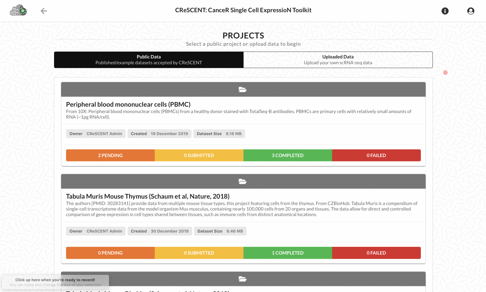Quick walkthrough of how to upload your own scRNA-seq data and create a project in CReSCENT.
Counts file sizes
Currently, the maximum file size that CReSCENT accepts is 200MB, which roughly corresponds to 100,000 cells from the 10X Cell Ranger count pipeline in the Matrix Market (MTX) format (described below). If your data comes from a different platform or is pre-normalized and contains decimals, you can considerably reduce its size by rounding RNA measurement values to 3 or 4 decimals.
Counts file formats
CReSCENT currently accepts scRNA-seq data in the MTX format as input. Converted from gene-by-barcode text files (table below), the MTX format requires less storage space for sparse matrices where many elements are zeros. The three files used as input are the MTX (matrix.mtx.gz) and its barcode and gene/feature indices (barcodes.tsv.gz and features.mtx.gz, respectively). These files are one of the outputs from a 10X Cell Ranger count run.
Gene-by-Barcode Matrix:
BARCODE1
BARCODE2
BARCODE3
GENE1
0
1
0
GENE2
2
1
7
GENE3
1
4
0
Note
One-line-command R script to convert gene-by-barcode text files to MTX files can be found in our GitHub.
Counts (raw) vs. pre-normalized data
CReSCENT is currently optimized to process raw counts from the 10X Cell Ranger count software. However, pre-normalized counts from other methods can be processed as long as they are provided in log scale, no negative values are included, and the QC filters are pre-computed (i.e. the Quality Control 'Apply QC Filters' parameter, found in the 'Pipeline' tab of the Visualizations page, should be set to 'No'). See Configuring parameters for more details
Note
Example data from 10X Genomics is available! The 10X scRNA-seq dataset contains PBMCs (approximately 1000 cells). It can be downloaded from our portal when creating a new project or by clicking here!
Warning
Personal/protected health information (PHI) is prohibited from upload. Do not include patient names, dates of birth, MRNs and other patient identifiers in your uploads. Examples of PHI can be found here. Only de-identified data is accepted in CReSCENT!
Uploading cell metadata
Following project creation, cell metadata can be uploaded, if available, via the Runs page. Cell metadata will be used to visualize and colour cells, as well as provide further insight into gene expression exploration in the Visualizations page. To upload metadata, click the 'Upload Metadata' button and then click the 'Metadata' upload icon to select your file. Once your metadata file is selected, click 'Upload' and exit the window.
Quick walkthrough of how to upload cell metadata for a project.
Metadata file format
CReSCENT currently accepts cell metadata in a tab-separated file (tsv). We have adopted the Broad standard for cell metadata. This tsv has cell barcodes in the first column and customized metadata labels in the subsequent columns (see table below). These labels can be categorized as "group" for categorical variables, like cell types, and "numeric" for continuous values, like orthogonal assay measurements. The double header is necessary to display the proper visualization with "NAME" and "TYPE" being mandatory.
Cell Metadata:
NAME
Cell_Type
Cell_Phase
Mitochondrial_Fraction
TYPE
group
group
numeric
BARCODE1
Endothelial_cell
G1
0.174
BARCODE2
Fibroblast
S
0.054
BARCODE3
Cardiac_muscle_cell
G2
0.199
Note
Metadata is an optional upload! Some examples include orthogonal assays, sample annotations, cell annotations, etc.
Warning
Personal/protected health information (PHI) is prohibited from upload. Do not include patient names, dates of birth, MRNs and other patient identifiers in your uploads. Examples of PHI can be found here. Only de-identified data is accepted in CReSCENT!
Creating a run
Once a CReSCENT project has been created, runs for the project can be submitted! A run involves optionally setting parameters for a standardized scRNA-seq analysis pipeline that includes quality control, normalization, dimension reduction, cell clustering, and differential gene expression. The pipeline is preconfigured but parameters are user-editable, making optimization, comparison, and re-analysis simple and easy to do on the fly. To create a run, click the '+' icon in the Runs page. A 'New Run’ window will appear where you can enter a name for the run. Once the run is named, clicking ‘Create Run’ will take you to the Visualizations page. Within the ‘Pipeline’ tab of the Visualizations page, parameters can be configured and the run can be submitted for analysis.
Each step within the pipeline has its own parameters (i.e. quality control step has a mitochondrial content parameter, etc.). These parameters can be changed to adjust for your scRNA-seq sample (i.e. adjusting for higher mitochondrial content due to the nature of the tissue). Multiple runs can also be submitted to optimize and compare results from differing parameters (i.e. too high of a mitochondrial content can include dying or cells in stress and this can be tweaked in different runs to see its effect on the results).
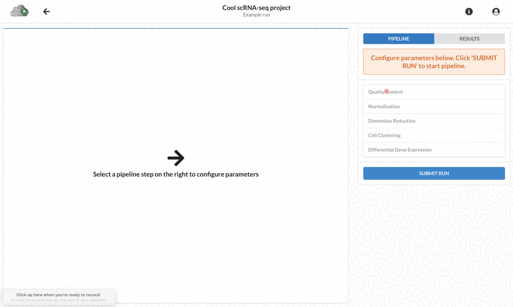Quick walkthrough of how to configure pipeline parameters for a project run and submit the run.
Note
Parameter details are described in the CReSCENT portal above every parameter.
Run status
Run status is indicated by the card colour. In other words, an orange run card represents a run that has not been submitted, a yellow run card represents a run being processed, a green run card represents a completed run with results available for exploration, and finally, a red run card represents a run that has failed with logs available for download.
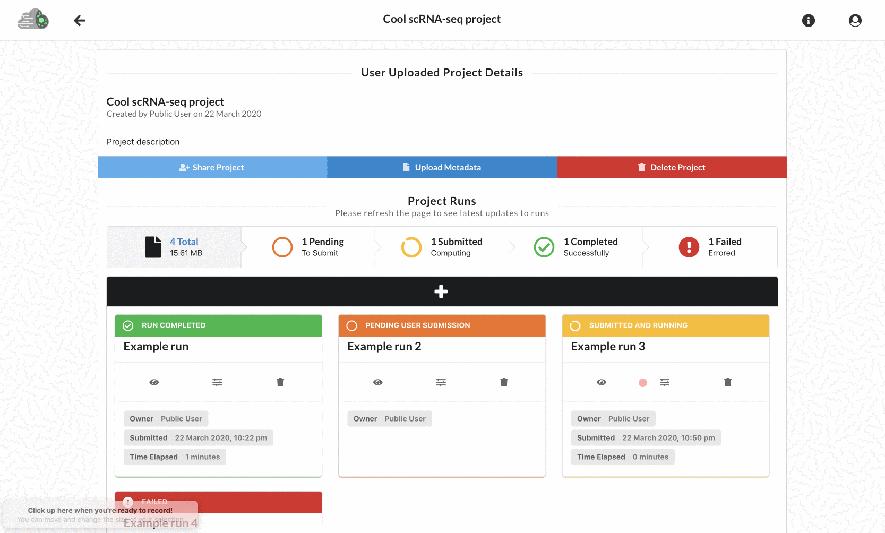Viewing all the different run statuses, filtering the runs by status, and refreshing to see latest updates.
Note
Please refresh the project runs page to see the latest updates to your runs!
Visualizing results
Once your run is submitted and completed, results are available to visualize and explore. There are a variety of interactive visualizations within CReSCENT. Quality control plots include violin plots of QC metrics before and after filtering as well as UMAP plots visualizing the different QC metrics with a gradient. Gene expression can be explored through t-SNE, UMAP, and violin plots. Along with the clustering results from the pipeline, cell metadata previously uploaded is incorporated to colour cells.
Viewing a completed run in CReSCENT.
Quality control
Quality control in the visualizations page consists of violin plots and UMAPs.
Quality control violin plots
The QC violin plots are interactive and display a variety of metrics. The four QC metrics (number of genes, number of reads, mitochondrial genes fraction, and ribosomal protein genes fraction) are displayed with distributions before and after QC filtering in the pipeline.
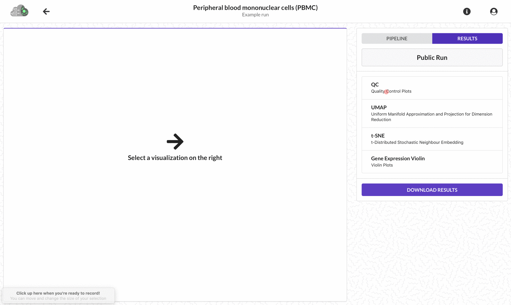Before/after filtering violin plots and how to switch between viewing barcodes and distribution statistics (mean, median, quartiles, etc.).
Quality control UMAP plots
The QC UMAP plots show the intensity of the four QC metrics with a gradient.
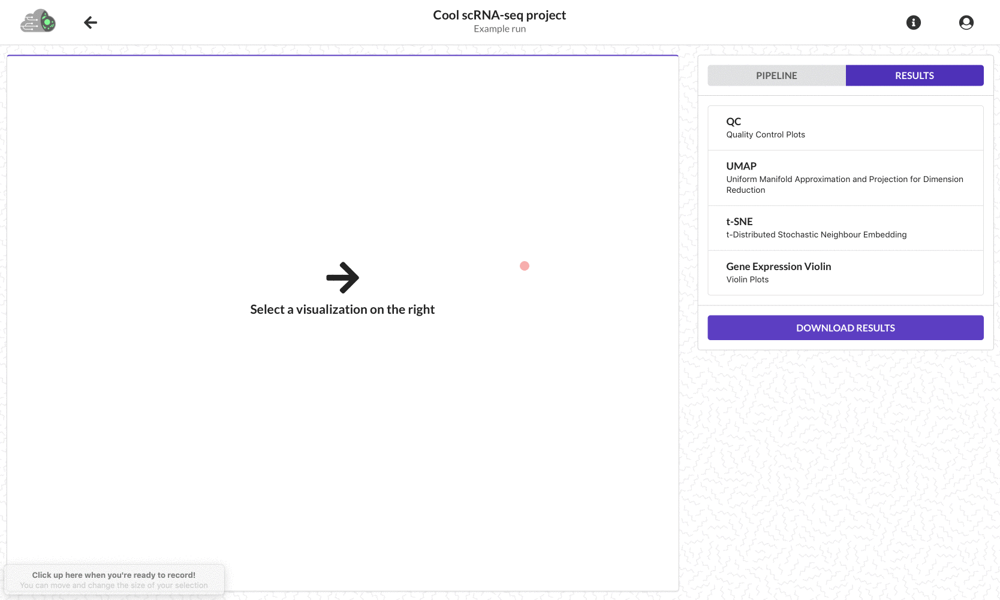QC UMAP plots showing distribution of the QC metrics across the cells.
Gene expression
Gene expression can be explored in the Visualizations page through t-SNE, UMAP, and violin plots. Gene expression can be explored by a) searching a gene of interest via the ‘Search Genes’ function or b) selecting a top differentially expressed gene (DEG) determined by CReSCENT’s pipeline which detects DEGs for each cell cluster vs. the rest of cells in the dataset. DEGs are detected using Seurat’s function FindAllMarkers() with most parameters set to defaults. Only genes detected in a minimum of 25% of cells (parameter min.pct=0.25) enter the DEG detection to speed up the function and skip genes that are infrequently expressed. Another parameter that is adjusted is a pseudocount to add to averaged expression values when calculating logFC (Seurat default=1); instead, we use 1 / number of cells in the dataset, as suggested by Inness and Bader (F1000Res, 2019).
t-SNE and UMAP
Both dimension reduction plots initially show cell clusters determined by CReSCENT's scRNA-seq pipeline. Cells can also be coloured by the previously uploaded metadata. Selecting a top DEG or searching a gene of interest will provide an opacity to the cells. The higher the normalized expression per cell, the darker the opacity. This gene exploration will provide insight into the expression of genes driving a cluster as well as potentially provide enough context to label the cluster.
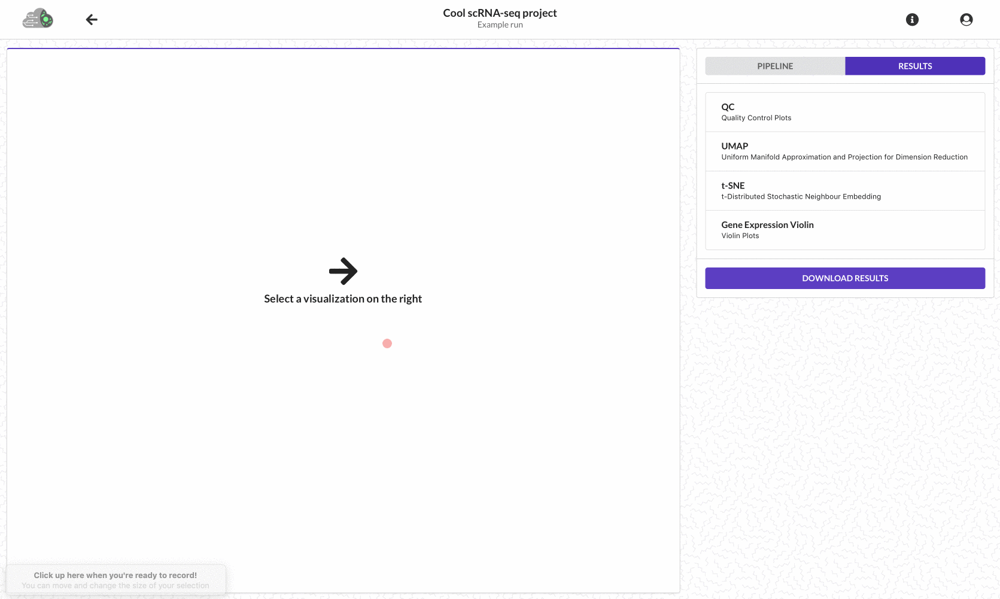QC UMAP plots showing distribution of the QC metrics across the cells.
Violin plots
The same gene expression exploration (cell metadata colouring, selecting a top expressed gene, and searching a gene of interest) as above can be done through violin plots.
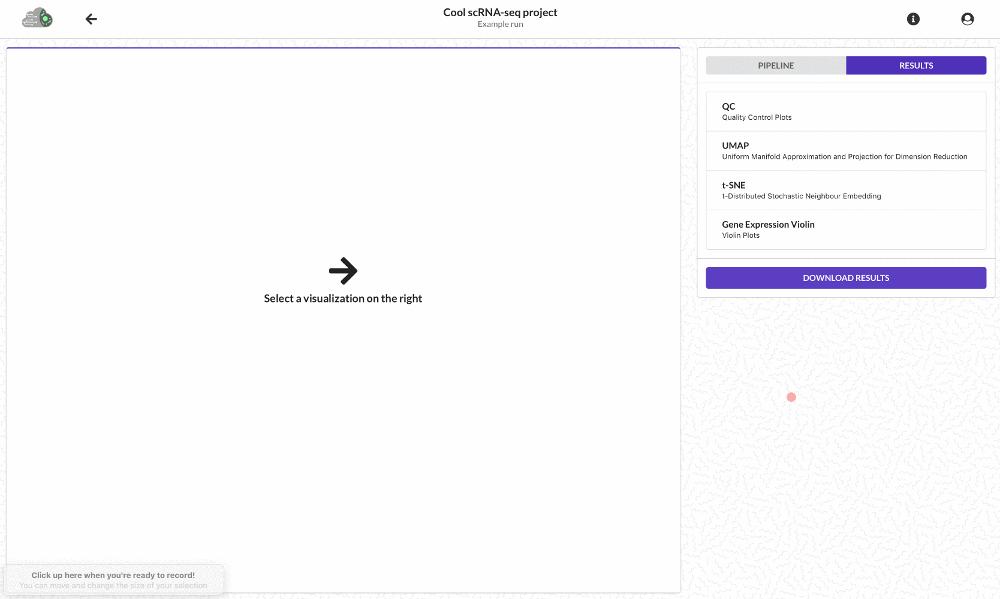QC UMAP plots showing distribution of the QC metrics across the cells.
Note
You can quickly toggle from t-SNE/UMAP to violin plots to get a better understanding of the expression of a gene!
Downloading results
Downloading results in CReSCENT is easy! After selecting a completed run, click the 'Results' tab in the Visualizations page and click the 'DOWNLOAD RESULTS' button to get a zipped folder of your run's results. This includes folders with QC plots and tables, dimension reduction plots and tables, cell cluster identity tables, average gene expression tables, differential gene expression tables and log files.
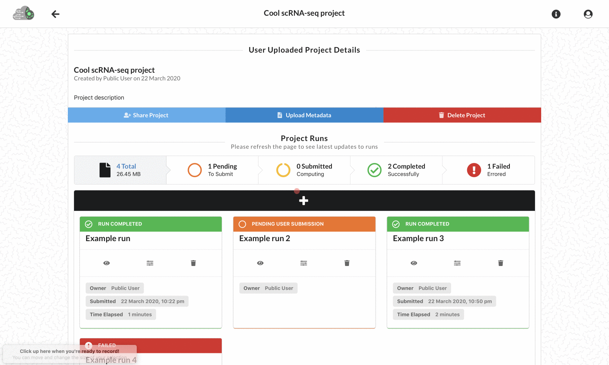Downloading results of a completed run in CReSCENT.
Note
Downloaded results are not interactive CReSCENT plots! These are static plots and tables generated from the pipeline.
Run logs
The following run log files are provided within the SEURAT/LOG_FILES folder found in the download from CReSCENT:
UsedOptions.txt with the commands used for the one-line-command application.
RSessionInfo.txt with the list of R and R library versions used in the run.
CPUusage.txt with the computing time used for each step of the run and the total time, also indicates the number of CPU cores used.
Note
A link to the current version of the Rscript can be found in the Visualizations page under the 'Pipeline' tab. You can also find a copy of the one-line-command Rscript used in your run within your downloaded zip in the main directory.
Failed run logs
Downloading failed run logs can help you pinpoint where and why your pipeline has failed. After selecting a failed run, clicking the 'DOWNLOAD RESULTS' button in the 'Results' tab of the Visualizations page will give you a zipped folder of your run's failed run logs. In addition, the pipeline can still be reviewed in the 'Pipeline' tab of the Visualizations page to investigate any errors in parameter configuration.
Downloading logs of a failed run and reviewing submitted parameters in CReSCENT.
Sharing a project
CReSCENT projects can be shared with collaborators. The shared project and its runs will appear in the collaborator's Projects page. To share a project, click the 'Share Project' button in a project's Runs page to allow collaborators to view and submit runs for that specific project.
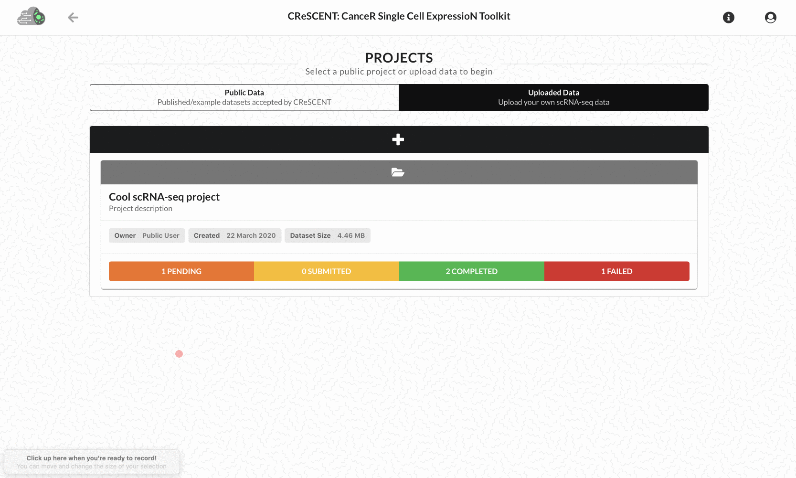Sharing a project with collaborators in CReSCENT.
Note
Projects can only be shared with users within CReSCENT! Sharing of projects requires the collaborator's email to be registered in CReSCENT. To register, click the user icon in the top right of the portal!
Deleting projects and runs
Deleting projects and runs is simple! To delete a project, click the 'Delete Project' button in a project's Runs page to delete a project and all of its runs. To delete a run, click the trash button in an individual run card to delete only that specific run of the project.
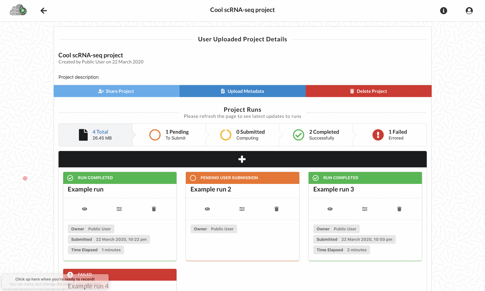Deleting individual runs within a project as well as deleting a project and all its runs.
Privacy and Security Policy Last updated: 2020-04-28 13:31 EST
Publicly uploaded information
Some features of CReSCENT are public facing and allow you to upload information that you may choose to make publicly available (see below). If you choose to upload content that is public-facing, third parties may access and use it. We do not sell any information that you provide to CReSCENT. However, any information that you make publicly available may be accessed and used by third parties, such as research organizations or commercial third parties.
Security
The CReSCENT portal has security measures in place to protect the loss, misuse and alteration of the information under our control. CReSCENT, UHN or SickKids, however, are not liable for the loss, misuse or alteration of information on this site by any third party.
Personal/Protected Health Information (PHI)
PHI is any information in a medical record that can be used to identify an individual, and that was created, used, or disclosed in the course of providing a health care service, such as a diagnosis or treatment. This includes, but is not limited, to sample or cell metadata that can reveal the identity of a patient or donor. PHI is not allowed in CReSCENT, neither in Private or Public Projects and uploaded data. Authors are responsible to make sure that PHI is not contained in the files that they upload. More examples of PHI can be found here.
Private and Public projects
A private project (and associated data) cannot be seen by anyone who has not been given access to the project by the authors (see Sharing a project for more details). In this way, it is possible to share the project to targeted individuals while keeping the project private to others. In contrast, a public project (and associated data) can be seen by and downloaded by anyone visiting the site. All newly created projects are created as private in CReSCENT.
Authors who want to make their project(s) public must:
Write to crescent@uhnresearch.ca indicating that they want to make their Project(s) public and the project name(s) as they appear in the author’s Projects page under the 'Uploaded Data' tab.
The CReSCENT team will evaluate the request for quality purposes, such as technical soundness of the datasets and reply back to the authors.
Authors must accept this Privacy and Security Policy.
Does CReSCENT only support single dataset pipelines?
Currently, CReSCENT only has single dataset pipelines. We are currently working on an integrate datasets pipeline that will allow for multiple datasets and integration (i.e. clustering and differential expression) using the main datasets as anchors.
{kind=link}
{kind=link}
{kind=link}
{kind=link}
{kind=link}
{kind=link}
{kind=link}
{kind=link}
{kind=link}
{kind=link}
{kind=link}
{kind=link}
{kind=link}
{kind=link}
{kind=link}